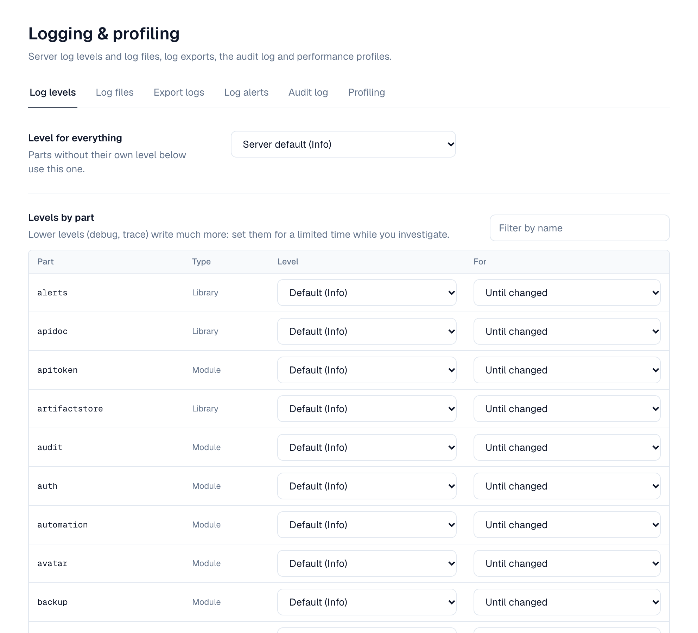
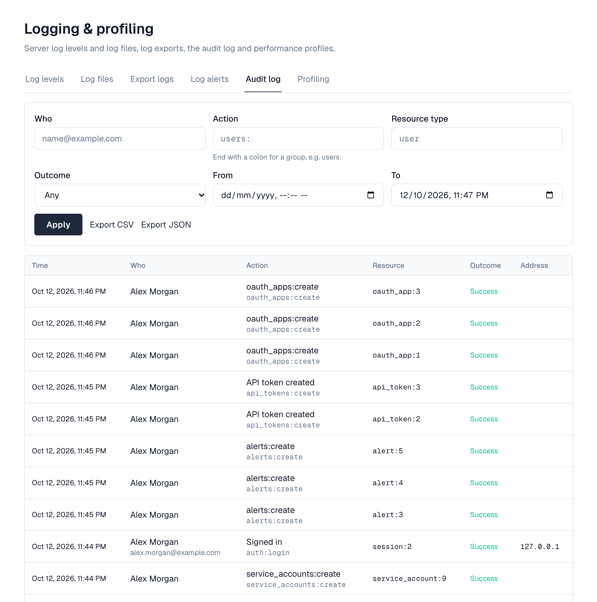

1. Overview
Depotex keeps two kinds of records:
| Server logs | Audit log | |
|---|---|---|
| What | Technical messages for operators and support: requests, errors, background work | Who did what and when: sign-ins, setting changes, user and group changes, exports |
| Where | Standard error, and log files on each server | The database, shared by every server |
| Kept | As long as the log file settings say | 90 days by default |
| Language | Always English | Stored as codes; shown in the reader's language |
2. Log levels
Each part of Depotex (the shared libraries, every module, every plugin) logs under its own name and level. The levels are trace, debug, info, warn and error; a part writes messages at its level and above. Until an administrator changes them, the levels come from the LOG_LEVEL environment variable (default info) and per-part LOG_LEVEL_<NAME> variables, for example LOG_LEVEL_IDENTITY=debug or LOG_LEVEL_PLUGIN_ACME=warn.

Levels can also be changed while Depotex runs under Settings → Advanced → Logging & profiling → Log levels (super admins: settings:write): the level for everything, and a level per part, either until you change it again or for 15 minutes to a day (for example debug for 30 minutes while you reproduce a problem). The list shows every library, module and plugin of the server you're connected to. Changes apply at once on that server and within a minute on the others.
3. Log files
Besides standard error, each server writes its log to rotating files in LOG_FILE_DIR (default ./data/logs, relative to where Depotex runs). Each server writes its own files on its own disk.
| Setting | Default |
|---|---|
| File name | {app}-{node}-{date}.log: the product name, the server, and the UTC day |
| Format | JSON, one message per line (or plain text) |
| New file | Every day, and when a file reaches 100 MB |
| Old files | Compressed with gzip; the newest 30 kept, none older than 30 days |
Change the file settings under Log files: on or off, the file name (with {app}, {node} and {date}), JSON or plain text, size and daily rotation, how many old files to keep and for how long, and compression. The tab also lists the files on the server you're connected to. Secrets such as passwords, tokens and keys are removed from every line before it's written. The directory is only ever set by the operator (LOG_FILE_DIR), never from the web interface; LOG_FILE_ENABLED=false turns files off until an administrator turns them on.
4. Exporting logs
Export logs collects the lines you need from every server's log files into one zip, for support or for your own analysis (settings:write, every license tier).
- Choose what to export — A time range (up to 31 days), the lowest level, optionally the parts (e.g. sso, identity, plugin:acme) and text the lines must contain, and in a cluster which servers.
- Start the export — The server you're connected to adds its part at once; the other servers add theirs within a minute. The list shows each server's progress.
- Download — When it's ready, select Download: a zip with one compressed file per server. Exports are deleted after a day.
Each server's part is limited to the storage upload size (Settings → Storage, default 50 MB compressed); a part that reaches it is marked as cut. Lines from plain-text log files are only filtered by time. Every export is recorded in the audit log.
Make sure LOG_FILE_DIR is on a disk with room for the files you keep (by default up to about 3 GB per server) and that only the account running Depotex can read it: logs can contain email and network addresses.
5. Log alerts
Log alerts tell you when the logs show a problem, without anyone watching them (settings:write, Enterprise). A rule matches log lines by lowest level, parts and, optionally, text or a regular expression, and fires when enough lines match within a time window, on all servers together:
- A threshold: for example 5 errors from sso within 5 minutes.
- A pattern: for example any warning containing disk full, with a threshold of 1.
When a rule fires it creates an in-app alert and/or emails the super admins or organization admins (email must be set up), records the firing in the tab's history with an example line, and raises the log.alert.fired event so automation can do more (a webhook to your chat tool, for example). After firing, a rule waits for its cooldown (default 60 minutes) before it can fire again. Lines are counted on every server and added up within about a minute.
- Open Log alerts — Settings → Advanced → Logging & profiling → Log alerts, then Add alert.
- Describe the lines — Name, lowest level, parts (empty = all), and text the message must contain (or a regular expression).
- Set when it fires — How many lines within how many minutes, and how long to wait before firing again.
- Choose who hears about it — Severity, in-app alert and/or email, and to whom.
6. Audit log
Every change to users, groups, directories, settings, tokens, licenses, plugins and policies, every sign-in and sign-out, and every export is recorded with who did it, from which address, what changed and whether it succeeded. Entries can't be edited. They are written in the background so they never slow down the action itself, and are kept even if the database is briefly unavailable.

- Who can read it: organization admins see their organization's entries; super admins see all. Members don't (the log contains other people's email and network addresses). Pro license or higher.
- Export: CSV or JSON, with the same filters as the list. Exports are recorded in the audit log too.
- Retention: entries older than 90 days are removed every night by the audit-log-retention scheduled job. Change the number of days on that job (Settings → Advanced → Scheduled jobs) or with AUDIT_LOG_RETENTION_DAYS.
- Privacy: anonymizing a person removes their email and network addresses from their entries; the entries themselves stay.
Viewing it: Settings → Advanced → Logging & profiling → Audit log lists entries newest first with who, what (with a readable name), the resource, the outcome and the network address; select a row for its details. Filter by person, action (end with a colon for a group, e.g. users:), resource type, outcome and time, then Export CSV or Export JSON with the same filters. The same data is available through the API: GET /api/audit-logs and GET /api/audit-logs/export?format=csv.
7. Profiling
Profiling captures a Go performance profile of one server, to find out why it's slow or uses a lot of memory (super admins, Enterprise). Open the downloaded file with go tool pprof or send it to support.
| Profile | Shows |
|---|---|
| CPU | Where the server spends processor time, sampled for 5 to 120 seconds (adds a few percent of load while it runs) |
| Memory in use | What memory is used right now |
| Memory allocations | Where memory has been allocated since the server started |
| Goroutines | What every goroutine is doing; useful when something hangs |
| Lock contention, Blocking | Where goroutines wait (only when enabled in the server build) |
Only one CPU profile runs on a server at a time. Profiles are kept for a day and every capture is recorded in the audit log.
8. Configuration
| Variable | Default | What it does |
|---|---|---|
| LOG_LEVEL | info | Default level for everything |
| LOG_LEVEL_<NAME> | Default level for one part, e.g. LOG_LEVEL_SSO, LOG_LEVEL_PLUGIN_ACME | |
| LOG_FILE_DIR | ./data/logs | Where this server writes log files |
| LOG_FILE_ENABLED | true | Write log files |
| AUDIT_LOG_RETENTION_DAYS | 90 | Days to keep audit entries (1 to 3650) |
| AUDIT_LOG_RETENTION_SCHEDULE | 20 3 * * * | When old audit entries are removed |
9. Events
Changing the logging settings raises logging.settings.update; adding, changing or removing a log alert raises log_alert_rule.create, log_alert_rule.update and log_alert_rule.delete (all can be blocked by subscribers); a firing raises log.alert.fired for automation. See Events.